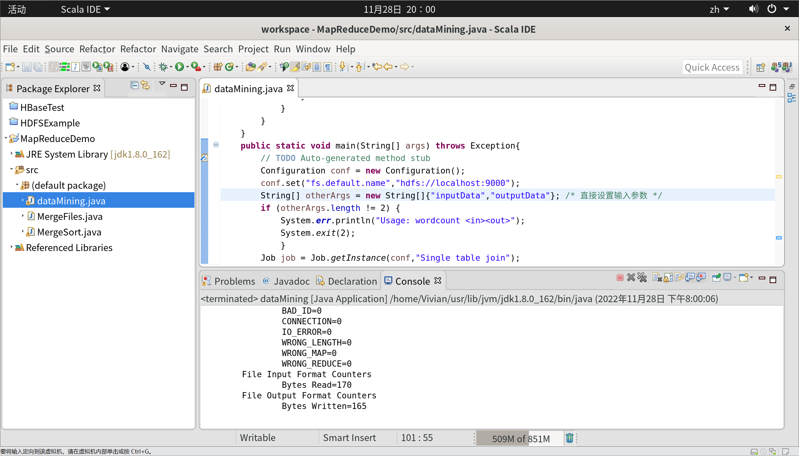

MapReduce 编程初级实践
参考资料
- 厦门大学林子雨老师 - HDFS编程实践（Hadoop3.1.3）
- CSDN - 实验5MapReduce初级编程实践
- CSDN - mkdir: Cannot create directory /input. Name node is in safe mode.
一、实验目的
- 通过实验掌握基本的 MapReduce 编程方法。
- 掌握用 MapReduce 解决一些常见数据处理问题的方法，包括数据去重、数据排序和数据 挖掘等。
二、实验平台
已经配置完成的 Hadoop 伪分布式环境。
- 操作系统：本地虚拟机
Ubuntu-20.04.5
- 开发工具：
Eclipse-4.7.0
- 大数据软件：
hadoop-3.1.3
三、实验内容和要求
3.1 编程实现文件合并和去重操作
对于两个输入文件，即文件 A 和文件 B，请编写 MapReduce 程序，对两个文件进行合并，并剔除其中重复的内容，得到一个新的输出文件 C。下面是输入文件和输出文件的一个样例，供参考。
3.1.1 准备输入文件
首先，我们需要先把输入文件准备好，
- 将其命名为
textA.txt 和 textB.txt，并向其内输入数据
- 在 HDFS 中创建输入文件夹
- 将两个文本文件上传到
input 文件夹中
启动 Hadoop
在 HDFS 用户目录中创建 input 目录
| hdfs dfs -mkdir -p /user/Vivian/input
|
在本地文件创建输入文件 A
输入文件 A 内的数据样例如下。
| 20150101 x
20150102 y
20150103 x
20150104 y
20150105 z
20150106 x
|
在本地文件创建输入文件 B
输入文件 B 的数据样例如下。
| 20150101 y
20150102 y
20150103 x
20150104 z
20150105 y
|
将文件上传到 HDFS
| hdfs dfs -put ~/textA.txt input
hdfs dfs -put ~/textB.txt input
|
查看 HDFS input 目录内容
图 1-1 准备输入文件全过程
查看输入文件中的数据
| hdfs dfs -cat input/textA.txt
hdfs dfs -cat input/textB.txt
|

图 1-2 查看输入文件数据
最终，我们将通过编程，实现把输入文件 A 和 B 合并得到输出文件 C ，样例如下。
| 20150101 x
20150101 y
20150102 y
20150103 x
20150104 y
20150104 z
20150105 y
20150105 z
20150106 x
|
3.1.2 创建 JAVA 项目 MapReduceDemo
接下来，我们打开 Eclipse，点击 File → New → JAVA Project，新建 JAVA 项目，并名为 MapReduceDemo
图 1-3 创建 JAVA 项目
3.1.3 为项目添加需要用到的 JAR 包
为了编写一个 MapReduce 程序，在新建 JAVA 项目时，向 Java 工程中添加以下 JAR 包：
~/usr/local/hadoop/share/hadoop/common目录下的 hadoop-common-3.1.3.jar和 haoop-nfs-3.1.3.jar；~/usr/local/hadoop/share/hadoop/common/lib 目录下的所有 JAR 包；~/usr/local/hadoop/share/hadoop/mapreduce 目录下的所有 JAR 包，但不包括其他文件夹~/usr/local/hadoop/share/hadoop/mapreduce/lib 目录下的所有 JAR 包~/usr/local/hadoop/share/hadoop/hdfs 目录下的所有 JAR 包，但不包括其他文件夹~/usr/local/hadoop/share/hadoop/hdfs/lib 目录下的所有 JAR 包~/usr/local/hadoop/share/hadoop/yarn 目录下的所有 JAR 包，但不包括其他文件夹~/usr/local/hadoop/share/hadoop/yarn/lib 目录下的所有 JAR 包

图 1-4 添加 JAR 包
3.1.4 新建 JAVA 类 MergeFiles
在刚刚创建好的 MapReduceDemo 工程下，右击 → New → Class，创建名为 MergeFiles 的类。

图 1-5 新建 JAVA 类
3.1.5 代码实现
- 注：这里我们使用 input 为输入目录，输出目录为 output，在运行前一定要确保输出目录不存在。
1
2
3
4
5
6
7
8
9
10
11
12
13
14
15
16
17
18
19
20
21
22
23
24
25
26
27
28
29
30
31
32
33
34
35
36
37
38
39
40
41
42
43
44
45
46
47
48
49
50
51
52
53
54
55
56 | import java.io.IOException;
import org.apache.hadoop.conf.Configuration;
import org.apache.hadoop.fs.Path;
import org.apache.hadoop.io.Text;
import org.apache.hadoop.mapreduce.Job;
import org.apache.hadoop.mapreduce.Mapper;
import org.apache.hadoop.mapreduce.Reducer;
import org.apache.hadoop.mapreduce.lib.input.FileInputFormat;
import org.apache.hadoop.mapreduce.lib.output.FileOutputFormat;
public class MergeFiles {
/**
* @param args
* 对A,B两个文件进行合并，并剔除其中重复的内容，得到一个新的输出文件C
*/
// 重载map函数，直接将输入中的value复制到输出数据的key上
public static class Map extends Mapper<Object, Text, Text, Text>{
private static Text text = new Text();
public void map(Object key, Text value, Context context) throws IOException,InterruptedException{
text = value;
context.write(text, new Text(""));//括号内容作为中间结果扔出去交给shuffle处理
}
}
// 重载reduce函数，直接将输入中的key复制到输出数据的key上
public static class Reduce extends Reducer<Text, Text, Text, Text>{
public void reduce(Text key, Iterable<Text> values, Context context ) throws IOException,InterruptedException{
context.write(key, new Text(""));
}
}
public static void main(String[] args) throws Exception{
// TODO Auto-generated method stub
Configuration conf = new Configuration();//程序运行时的参数
conf.set("fs.defaultFS","hdfs://localhost:9000");
String[] otherArgs = new String[]{"input","output"}; /* 直接设置输入参数 */
if (otherArgs.length != 2) {
System.err.println("Usage: wordcount <in><out>");
System.exit(2);
}
Job job = Job.getInstance(conf,"Merge and duplicate removal");//设置环境参数
job.setJarByClass(MergeFiles.class);//设置整个程序的类名
job.setMapperClass(Map.class);//添加Mapper类
job.setCombinerClass(Reduce.class);//设置Combiner类
job.setReducerClass(Reduce.class);//添加Reducer类
job.setOutputKeyClass(Text.class);//设置输出类型
job.setOutputValueClass(Text.class);//设置输出类型
FileInputFormat.addInputPath(job, new Path(otherArgs[0]));//设置输入原始文件文件路径
FileOutputFormat.setOutputPath(job, new Path(otherArgs[1]));//设置输出文件路径
//Job运行是通过job.waitForCompletion(true)，true表示将运行进度等信息及时输出给用户，false的话只是等待作业结束
boolean result = job.waitForCompletion(true);
System.exit(result ? 0 : 1);
}
}
|

图 1-6 运行成功
3.1.6 查看输出结果
查看输出目录
查看输出结果数据
图 1-7 查看输出数据
3.2 编程实现对输入文件的排序
现在有多个输入文件，每个文件中的每行内容均为一个整数。要求读取所有文件中的整数，进 行升序排序后，输出到一个新的文件中，输出的数据格式为每行两个整数，第一个整数为第二个整 数的排序位次，第二个整数为原待排列的整数。下面是输入文件和输出文件的一个样例，供参考。
3.2.1 准备输入文件
在 HDFS 用户目录中创建 inputSort 目录
| hdfs dfs -mkdir -p /user/Vivian/inputSort
|
在本地文件创建输入文件 1
输入文件 1 的样例如下。
在本地文件创建输入文件 2
输入文件 2 的样例如下。
在本地文件创建输入文件 3
输入文件 3 的样例如下。
将文件上传到 HDFS
| hdfs dfs -put ~/text1.txt inputSort
hdfs dfs -put ~/text2.txt inputSort
hdfs dfs -put ~/text3.txt inputSort
|
查看 HDFS inputSort 目录内容

图 2-1 准备排序输入文件全过程
最终，我们将通过编程，实现把输入文件 1、2 和 3 得到的输出文件如下。
| 1 1
2 4
3 5
4 12
5 16
6 25
7 33
8 37
9 39
10 40
11 45
|
3.2.2 新建类 MergeSort
接下来我们继续在创建好的 MapReduceDemo 工程下进行操作，右击 → New → Class，创建名为 MergeSort 的类，步骤同 3.1.4。
3.2.3 代码实现
- 注：这里我们使用 inputSort 为输入目录，输出目录为 outputSort。
1
2
3
4
5
6
7
8
9
10
11
12
13
14
15
16
17
18
19
20
21
22
23
24
25
26
27
28
29
30
31
32
33
34
35
36
37
38
39
40
41
42
43
44
45
46
47
48
49
50
51
52
53
54
55
56
57
58
59
60
61
62
63
64
65
66
67
68
69
70
71
72
73
74
75
76
77
78
79
80
81 | import java.io.IOException;
import org.apache.hadoop.conf.Configuration;
import org.apache.hadoop.fs.Path;
import org.apache.hadoop.io.IntWritable;
import org.apache.hadoop.io.Text;
import org.apache.hadoop.mapreduce.Job;
import org.apache.hadoop.mapreduce.Mapper;
import org.apache.hadoop.mapreduce.Partitioner;
import org.apache.hadoop.mapreduce.Reducer;
import org.apache.hadoop.mapreduce.lib.input.FileInputFormat;
import org.apache.hadoop.mapreduce.lib.output.FileOutputFormat;
public class MergeSort {
/**
* @param args
* 输入多个文件，每个文件中的每行内容均为一个整数
* 输出到一个新的文件中，输出的数据格式为每行两个整数，第一个数字为第二个整数的排序位次，第二个整数为原待排列的整数
*/
//map函数读取输入中的value，将其转化成IntWritable类型，最后作为输出key
public static class Map extends Mapper<Object, Text, IntWritable, IntWritable>{
private static IntWritable data = new IntWritable();
public void map(Object key, Text value, Context context) throws IOException,InterruptedException{
String text = value.toString();
data.set(Integer.parseInt(text));//将括号内容复制给data对象
context.write(data, new IntWritable(1));//括号内容作为中间结果扔出去交给shuffle处理
}
}
//reduce函数将map输入的key复制到输出的value上，然后根据输入的value-list中元素的个数决定key的输出次数,定义一个全局变量line_num来代表key的位次
public static class Reduce extends Reducer<IntWritable, IntWritable, IntWritable, IntWritable>{
private static IntWritable line_num = new IntWritable(1);
public void reduce(IntWritable key, Iterable<IntWritable> values, Context context) throws IOException,InterruptedException{
for(IntWritable val : values){
context.write(line_num, key);
line_num = new IntWritable(line_num.get() + 1);
}
}
}
//自定义Partition函数，此函数根据输入数据的最大值和MapReduce框架中Partition的数量获取将输入数据按照大小分块的边界，然后根据输入数值和边界的关系返回对应的Partiton ID
public static class Partition extends Partitioner<IntWritable, IntWritable>{
public int getPartition(IntWritable key, IntWritable value, int num_Partition){
int Maxnumber = 65223;//int型的最大数值
int bound = Maxnumber/num_Partition+1;
int keynumber = key.get();//从key的序列类型转换成int类型
for (int i = 0; i<num_Partition; i++){
if(keynumber<bound * (i+1) && keynumber>=bound * i){
return i;
}
}
return -1;// 表示返回一个代数值，一般用在子函数结尾。按照程序开发的一般惯例，表示该函数失败；
}
}
public static void main(String[] args) throws Exception{
// TODO Auto-generated method stub
Configuration conf = new Configuration();//程序运行时的参数
conf.set("fs.defaultFS","hdfs://localhost:9000");
String[] otherArgs = new String[]{"inputSort","outputSort"}; /* 直接设置输入参数 */
if (otherArgs.length != 2) {
System.err.println("Usage: wordcount <in><out>");
System.exit(2);
}
Job job = Job.getInstance(conf,"Merge and sort");//设置环境参数
job.setJarByClass(MergeSort.class);//设置整个程序的类名
job.setMapperClass(Map.class);//添加Mapper类
job.setReducerClass(Reduce.class);//添加Reducer类
job.setPartitionerClass(Partition.class);//添加Partitioner类
job.setOutputKeyClass(IntWritable.class);//设置输出类型
job.setOutputValueClass(IntWritable.class);//设置输出类型
FileInputFormat.addInputPath(job, new Path(otherArgs[0]));//设置输入原始文件文件路径
FileOutputFormat.setOutputPath(job, new Path(otherArgs[1]));//设置输出文件路径
//Job运行是通过job.waitForCompletion(true)，true表示将运行进度等信息及时输出给用户，false的话只是等待作业结束
boolean result = job.waitForCompletion(true);
System.exit(result ? 0 : 1);
}
}
|

图 2-2 排序程序成功运行
3.2.4 查看输出结果
查看输出目录
查看输出结果数据
| hdfs dfs -cat outputSort/*
|
图 2-3 查看排序输出结果
3.3 对给定的表格进行信息挖掘
下面给出一个 child-parent 的表格，要求挖掘其中的父子辈关系，给出祖孙辈关系的表格。
3.3.1 准备输入文件
在 HDFS 用户目录中创建 inputData 目录
| hdfs dfs -mkdir -p /user/Vivian/inputData
|
在本地文件创建输入文件
输入文件内容如下。
1
2
3
4
5
6
7
8
9
10
11
12
13
14
15 | child parent
Steven Lucy
Steven Jack
Jone Lucy
Jone Jack
Lucy Mary
Lucy Frank
Jack Alice
Jack Jesse
David Alice
David Jesse
Philip David
Philip Alma
Mark David
Mark Alma
|
将文件上传到 HDFS
| hdfs dfs -put ~/inputText.txt inputData
|
查看 HDFS inputData 目录内容
图 3-1 数据挖掘准备全过程
最终，我们将通过编程，实现的输出文件内容如下。
1
2
3
4
5
6
7
8
9
10
11
12
13 | grandchild grandparent
Steven Alice
Steven Jesse
Jone Alice
Jone Jesse
Steven Mary
Steven Frank
Jone Mary
Jone Frank
Philip Alice
Philip Jesse
Mark Alice
Mark Jesse
|
3.3.2 新建类 dataMining
接下来我们继续在创建好的 MapReduceDemo 工程下进行操作，右击 → New → Class，创建名为 dataMining 的类，步骤同 3.1.4。
3.3.3 代码实现
- 注：这里我们使用 inputData 为输入目录，输出目录改为 outputData。
1
2
3
4
5
6
7
8
9
10
11
12
13
14
15
16
17
18
19
20
21
22
23
24
25
26
27
28
29
30
31
32
33
34
35
36
37
38
39
40
41
42
43
44
45
46
47
48
49
50
51
52
53
54
55
56
57
58
59
60
61
62
63
64
65
66
67
68
69
70
71
72
73
74
75
76
77
78
79
80
81
82
83
84
85
86
87
88
89
90
91
92
93
94
95
96
97
98
99
100
101
102
103
104
105
106
107
108
109
110
111
112
113
114
115
116
117 | import java.io.IOException;
import java.util.*;
import org.apache.hadoop.conf.Configuration;
import org.apache.hadoop.fs.Path;
import org.apache.hadoop.io.Text;
import org.apache.hadoop.mapreduce.Job;
import org.apache.hadoop.mapreduce.Mapper;
import org.apache.hadoop.mapreduce.Reducer;
import org.apache.hadoop.mapreduce.lib.input.FileInputFormat;
import org.apache.hadoop.mapreduce.lib.output.FileOutputFormat;
public class dataMining {
public static int time = 0;
/**
* @param args
* 输入一个child-parent的表格
* 输出一个体现grandchild-grandparent关系的表格
*/
//Map将输入文件按照空格分割成child和parent，然后正序输出一次作为右表，反序输出一次作为左表，需要注意的是在输出的value中必须加上左右表区别标志
public static class Map extends Mapper<Object, Text, Text, Text>{
public void map(Object key, Text value, Context context) throws IOException,InterruptedException{
String child_name = new String();
String parent_name = new String();
String relation_type = new String();
String line = value.toString();
int i = 0;
while(line.charAt(i) != ' '){
i++;
}
String[] values = {line.substring(0,i),line.substring(i+1)};
if(values[0].compareTo("child") != 0){
child_name = values[0];
parent_name = values[1];
relation_type = "1";//左右表区分标志
context.write(new Text(values[1]), new Text(relation_type+"+"+child_name+"+"+parent_name));
//左表
relation_type = "2";
context.write(new Text(values[0]), new Text(relation_type+"+"+child_name+"+"+parent_name));
//右表
}
}
}
public static class Reduce extends Reducer<Text, Text, Text, Text>{
public void reduce(Text key, Iterable<Text> values,Context context) throws IOException,InterruptedException{
if(time == 0){ //输出表头
context.write(new Text("grandchild"), new Text("grandparent"));
time++;
}
int grand_child_num = 0;
String grand_child[] = new String[10];
int grand_parent_num = 0;
String grand_parent[]= new String[10];
Iterator ite = values.iterator();
while(ite.hasNext()){
String record = ite.next().toString();
int len = record.length();
int i = 2;
if(len == 0) continue;
char relation_type = record.charAt(0);
String child_name = new String();
String parent_name = new String();
//获取value-list中value的child
while(record.charAt(i) != '+'){
child_name = child_name + record.charAt(i);
i++;
}
i=i+1;
//获取value-list中value的parent
while(i<len){
parent_name = parent_name+record.charAt(i);
i++;
}
//左表，取出child放入grand_child
if(relation_type == '1'){
grand_child[grand_child_num] = child_name;
grand_child_num++;
}
else{//右表，取出parent放入grand_parent
grand_parent[grand_parent_num] = parent_name;
grand_parent_num++;
}
}
if(grand_parent_num != 0 && grand_child_num != 0 ){
for(int m = 0;m<grand_child_num;m++){
for(int n=0;n<grand_parent_num;n++){
context.write(new Text(grand_child[m]), new Text(grand_parent[n]));
//输出结果
}
}
}
}
}
public static void main(String[] args) throws Exception{
// TODO Auto-generated method stub
Configuration conf = new Configuration();
conf.set("fs.defaultFS","hdfs://localhost:9000");
String[] otherArgs = new String[]{"inputData","outputData"}; /* 直接设置输入参数 */
if (otherArgs.length != 2) {
System.err.println("Usage: wordcount <in><out>");
System.exit(2);
}
Job job = Job.getInstance(conf,"Single table join");
job.setJarByClass(dataMining.class);
job.setMapperClass(Map.class);
job.setReducerClass(Reduce.class);
job.setOutputKeyClass(Text.class);
job.setOutputValueClass(Text.class);
FileInputFormat.addInputPath(job, new Path(otherArgs[0]));
FileOutputFormat.setOutputPath(job, new Path(otherArgs[1]));
System.exit(job.waitForCompletion(true) ? 0 : 1);
}
}
|

图 3-2 数据挖掘程序成功运行
3.3.4 查看输出结果
查看输出目录
查看输出结果数据
| hdfs dfs -cat outputData/*
|
图 3-3 查看数据挖掘输出结果
最后更新:
2023-03-08
创建日期:
2022-12-27
作者:
gis-xh
{kind=link}
{kind=link}
{kind=link}
{kind=link}
{kind=link}
{kind=link}
{kind=link}